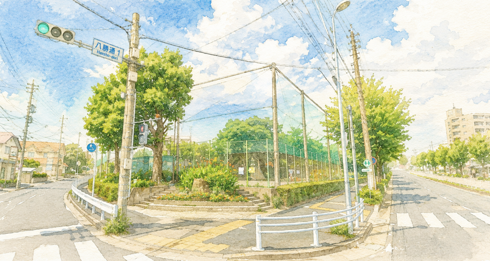

陽明学区 デジタル回覧板 令和8年 8月号

厳しい暑さが続いておりますが、皆様いかがお過ごしでしょうか。
今月は、家計に大助かりな「プレミアム付き電子商品券」の申し込みや、新しく完成した消防団詰所の内覧会など、見逃せない情報が満載です。また、アジア大会聖火リレーでの豪華ランナー情報や、近隣で激増中の空き巣アラートなど、暮らしを守る重要事項も必ずご確認ください！
🚨 【緊急警戒】空き巣被害が激増中！
現在、瑞穂区の近隣管内で住宅対象窃盗犯（空き巣）の被害が激増しています！
在宅、不在に関わらず「施錠」を徹底してください！不審者を見たらすぐに110番通報をお願いします。
✨ 今月のおトク＆地域ニュース
📱 名古屋市プレミアム付き電子商品券
申込期間：7月6日(月)〜8月14日(金)
10,000円で13,000円分のお買い物ができる超お得な商品券の申し込みが始まっています。今年は「電子(スマホアプリ)のみ」での発行となりますのでご注意ください！
公式特設サイトで申し込み方法を見る 🔗🚒 陽明消防団 新詰所 特別内覧会
日時：8月23日(日) 10:00〜11:30
場所：密柑山公園となり (ひばり荘南西防火水槽横)
地域の新しい防災拠点が完成しました！陽明学区にお住まいの方限定で、先着100名様に「美濃忠の紅白お菓子」をプレゼントいたします。※駐車場はありませんので徒歩でお越しください。
🔥 アジア大会 聖火リレー・交通規制
9/16(水) 聖火リレーが瑞穂区内を走ります！
通過・規制予定：16:25〜17:40頃
博物館から瑞穂運動場西に向けて聖火リレーが行われます。この時間帯、コース本線上は車両・歩行者の横断ができない「通行止め」となります。
ランナーとして、シドニー五輪金メダリストの高橋尚子さんや、名古屋グランパス スペシャルフェローの楢崎正剛さんなど豪華スターが瑞穂区内を駆け抜ける予定です！
※夕方のお買い物や帰宅ラッシュと重なります。詳細な規制エリアや「生活防衛」については、ページ上部の【アジア大会特設バナー】から必ずご確認ください。
🌻 夏休み！子育て・ファミリー
📻 夏休みラジオ体操
期間：8/17(月)〜21(金)、8/24(月)〜28(金)
時間・場所：朝6:30〜 密柑山公園
子どもから大人まで誰でも参加無料！お楽しみ参加賞もあります。
🍉 ひばりひなっこクラブ「ルーミー」夏祭り
日時：8月19日(水) 10:00〜12:00
場所：ひばり荘 多目的室＆お庭
0歳から就園前のお子さんと保護者対象。わなげやヨーヨー釣り、水遊びなど楽しい出し物を用意しています！
8月13日(木)〜8月16日(日)はお盆休みのため活動中止となります。夏休み期間中は午前9時〜午後6時の開設です。
🍵 健康・交流・防災
📢 9/6(日) 全市一斉情報伝達訓練
朝8時30分に市内全域で「緊急地震速報」の訓練発信が行われます。スマホの防災アプリや屋外スピーカーの鳴動を確認し、避難行動を再確認しましょう。
▶ 「南海トラフ地震臨時情報」への備えについて
🍱 ご高齢者 お食事会のご案内
開催日：10月6日(火) 10:00〜12:30
悪質商法の被害防止などの講演後にお弁当をお渡しします（会食か持ち帰りを選択）。参加費500円。
※申込受付は9/2(水)の八勝サロン等から順次開始します。
🌸 高齢者はつらつ長寿「コスモス」
申込期間：8月3日(月)〜8月28日(金)
週1回の健康づくり体操や制作活動でフレイル予防！10月から半年間の参加者（65歳以上）を募集しています。参加無料。
🤝 陽明学区での暮らしを、もっと安心に
マンションや賃貸にお住まいの方、以前から住んでいるけれど未加入の方も大歓迎です。
街の安全や子どもたちの笑顔を支える「共助の輪」に、あなたも加わりませんか？